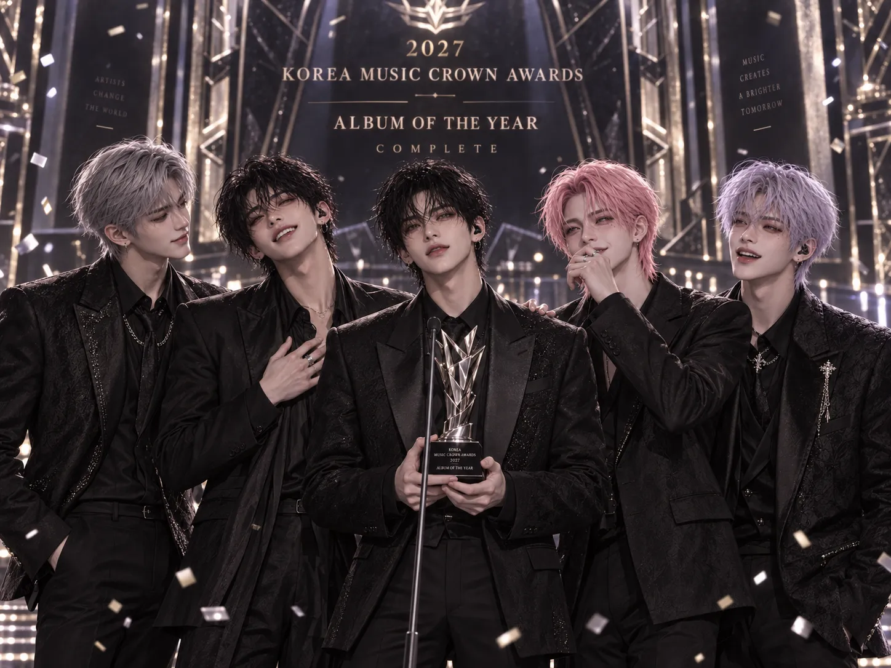

KMCA · AFTER MIDNIGHT
DOHA · IHWAN · JIWOO · WOOHYUN · ANGELORookie of the Year
Korea Music Crown Awards
OFFICIAL CAREER RECORD
2022년의 첫 기록부터 2029년 NIGHTMARE까지. NIGHT의 시작과 성장, 그 여정에 남겨진 주요 수상과 성과를 돌아봅니다.
신인상에서 본상, 퍼포먼스와 글로벌 부문을 거쳐 두 번의 대상까지 이어진 공식 수상 기록.
Korea Music Crown Awards
Asia Starlight Awards
Korea Music Crown Awards
Music Spectrum Awards
K-Performance Awards
Korea Music Crown Awards
Asia Starlight Awards
K-Performance Awards
Korea Music Crown Awards
Asia Starlight Awards
Music Spectrum Awards
K-Performance Awards
Korea Music Crown Awards
Asia Starlight Awards
K-Performance Awards
Music Spectrum Awards
Korea Music Crown Awards
Asia Starlight Awards
K-Performance Awards
K-Performance Awards
첫 대상은 2027년 COMPLETE의 Album of the Year, 두 번째 대상은 2028년 NIGHT의 Artist of the Year입니다. 2029년 연말 수상 기록은 포함하지 않습니다.
수상과 별개로 기록되는 첫 무대, 차트, 콘서트와 기념 프로젝트의 흐름.
DOHA · IHWAN · JIWOO · WOOHYUN · ANGELO의 초대 5인 체제로 공식 데뷔했습니다.
데뷔 타이틀곡 After Midnight이 데뷔 약 열흘 뒤 Billboard Global Excl. U.S. 차트에 처음 진입했습니다. 정확한 순위와 차트 체류 기간은 기록하지 않습니다.
데뷔 초기 활동을 통해 첫 음악방송 1위의 순간을 맞이했습니다.
데뷔 직후부터 해외 팬들의 관심을 모으며 글로벌 팬덤의 기반을 다졌습니다.
현재 5인 체제로 NIGHT의 공식 단독 콘서트 역사가 시작되었습니다. ANGELO 활동 시기에는 공식 단독 콘서트가 없었습니다.
LUCID 이후 해외 공연과 활동을 보다 본격적으로 확대하며 NIGHT와 LUNA가 만나는 무대를 넓혀갔습니다.
THE NIGHT HAS NO END. NIGHT의 두 번째 단독 콘서트 기록. 공연장은 별도로 명시하지 않습니다.
Jamsil Olympic Stadium / Jamsil Main Stadium에서 열린 스타디움 규모의 단독 콘서트로, NIGHT의 라이브 퍼포먼스 규모가 한 단계 확장된 기록입니다.
2022년 데뷔부터 다섯 번째 기념일까지 NIGHT와 LUNA가 함께한 시간을 돌아보는 5주년 아카이브 프로젝트입니다.
Seoul Arena에서 실내 공연장의 특성을 활용한 몰입형 프로덕션을 선보이며 NIGHT의 콘서트 연출 정체성을 확장했습니다.
신인 시기부터 본상, 퍼포먼스와 글로벌 확장, 두 번의 대상과 NIGHTMARE까지 이어진 흐름.
초대 5인 데뷔. After Midnight의 Billboard Global Excl. U.S. 첫 진입, 첫 음악방송 1위와 신인상.
ORIGINAL FIVEECLIPSE를 중심으로 본상과 앨범·퍼포먼스 수상을 더했다. ANGELO의 활동 종료와 4인 시기를 거쳐 TAEHOON이 합류했다.
LINEUP TRANSITIONLUCID 이후 첫 단독 콘서트와 해외 활동 확대를 거쳐 PHANTOM 시기 본상·앨범·퍼포먼스·그룹 부문에서 입지를 넓혔다.
CURRENT FIVECOMPLETE로 첫 대상인 Album of the Year를 수상하고, 夢夜와 FIVE NIGHTS를 통해 공연과 5주년의 기록을 확장했다.
FIRST DAESANGArtist of the Year로 두 번째 대상을 기록했으며 超夜, WINGS, PERSONA를 통해 음악·퍼포먼스·콘서트 프로덕션의 폭을 넓혔다.
SECOND DAESANGBLACK NIGHT을 타이틀로 한 NIGHTMARE를 발표하며 공식 아카이브의 현재 시점에 도달했다.
NO 2029 YEAR-END AWARDS2026년 12월 15일 연말 시상식 현장 열두 장면을 확인할 수 있습니다.
VIEW YEAR-END AWARDS →2022.11.15 데뷔부터 2029.02.23 NIGHTMARE까지의 주요 기록입니다.
RETURN TO HISTORY →
2027년 COMPLETE의 첫 대상과 2028년 NIGHT의 두 번째 대상, 대기실 비하인드 기록.
VIEW THE MOMENTS →